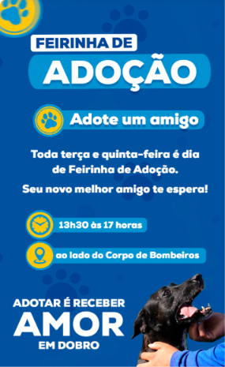
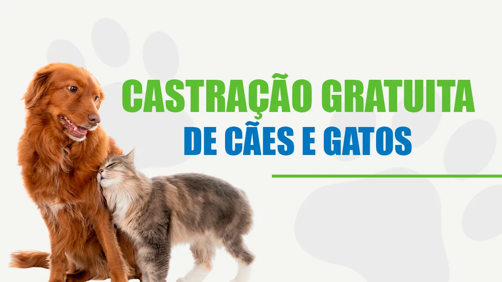
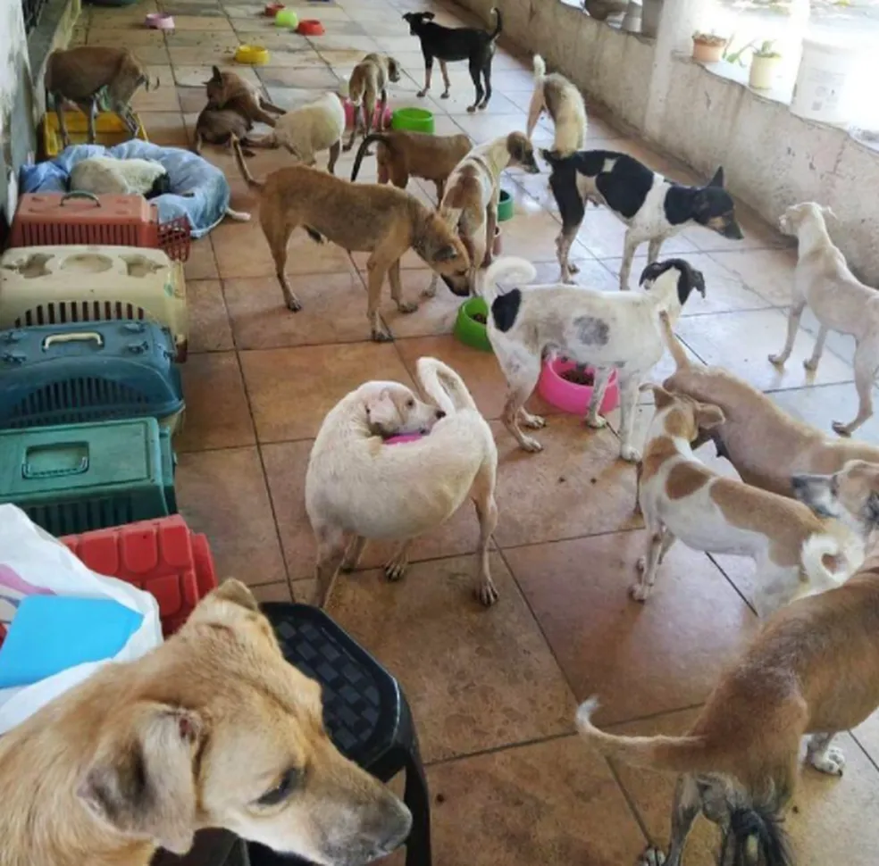
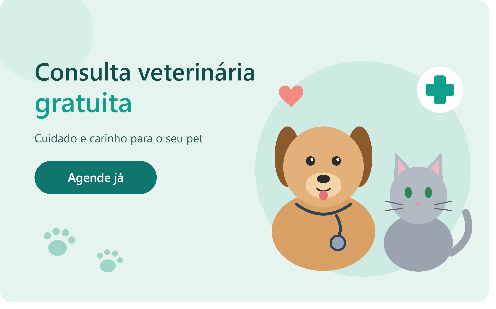

Somos uma Ong para cuidados dos animais.
Quero ajudarSobre Nós
A ONG Patas Amigas atua cuidandos dos animais, fornecendo tratamento, cuidados, comida e carinho.
Fundada em 2019 por um grupo de amigos apaixonados por animais, a Patas Amigas começou resgatando cães no quintal de casa. Hoje mantemos um abrigo próprio e já encontramos um novo lar para mais de 350 cães.
Nossa Equipe
- Rikkellmy
- Bruno
- Caio
- Kayllany
Nossos projetos
Conheça algumas ações realizadas pela ONG para ajudar milhares de animais.




Como doar
Existem várias formas de ajudar, desde voluntários a doações.
Doe via PIX
- Pix:(83)4992-6992
Doe através de transferencia Bancaria
- Conta nº 0759-5
Agência nº 57090-7
Contato
- Telefone: (00) 90000-0000
- E-mail: contato@patasamigas.org
- Instagram: PatasAmigas
Horário de Atendimento
- Segunda a Sexta- 07:30 às 12:00 e 13:00 às 17:00.
- Sabados- 07:00 até 12:00.